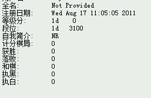

再次咨询：orc里面关于等级分的设置问题
#1 再次咨询：orc里面关于等级分的设置问题 作者：黄药师 发表时间：2012-5-22 20:25:14

如图，等级分如何增加的，是不是下那种计分的对局赢了有等级分？还是？？？？
#2 Re:再次咨询：orc里面关于等级分的设置问题 作者：梧桐风 发表时间：2012-5-22 20:28:03
亲，这个有啥所谓的？我只知道新号只要刚开始全赢十几二十盘有计分的就可以瞬间五六段#3 Re:再次咨询：orc里面关于等级分的设置问题 作者：极地剑客 发表时间：2012-5-22 20:30:17
搞这些木有意义#4 Re:极地剑客【==Re:再次咨询：orc里面关于等级分的设置问题==】 作者：黄药师 发表时间：2012-5-22 20:40:08
引用：
原文由 极地剑客 发表于 2012-5-22 20:30:17 :
搞这些木有意义
小萝莉感兴趣。
然后她们发现下了n盘，没有变化 。
。
［ 极地剑客 于 2012-5-22 21:01:27 时花20金币送鲜花一朵］
#5 Re:再次咨询：orc里面关于等级分的设置问题 作者：潇洒 发表时间：2012-5-22 20:45:37
和三个不同ID（有认证段级位的号即后面带*号）都下过计分棋局。。而且有1盘输局或者1盘和局。。第二天就有等级分了。。
#6 Re:再次咨询：orc里面关于等级分的设置问题 作者：潇洒 发表时间：2012-5-22 20:47:54
计分局越多。。分数越稳定。。难涨分和跌分。。
低分砍高分的号上升快。。高分的号砍低分的好上升慢。。
#7 Re:潇洒【==Re:再次咨询：orc里面关于等级分的设置问题==】 作者：黄药师 发表时间：2012-5-22 20:49:31
引用：
原文由 潇洒 发表于 2012-5-22 20:45:37 :和三个不同ID（有认证段级位的号即后面带*号）都下过计分棋局。。而且有1盘输局或者1盘和局。。第二天就有等级分了。。
如果和不带*号的下是不是分？
我们小朋友一般只是自己和自己下，都是没有*的啊！
是不是必须要和一个带*的下？
#8 Re:再次咨询：orc里面关于等级分的设置问题 作者：三道 发表时间：2012-5-22 21:06:37
自己跟自己下，是没有分的。要跟别人下，并且要下计分的。因为棋局是分计分和不计分的。#9 Re:再次咨询：orc里面关于等级分的设置问题 作者：潇洒 发表时间：2012-5-22 21:22:32
和带*的号下计分局才会有分。。#10 Re:再次咨询：orc里面关于等级分的设置问题 作者：潇洒 发表时间：2012-5-22 21:23:18
必须的。。#11 Re:潇洒【==Re:再次咨询：orc里面关于等级分的设置问题==】 作者：黄药师 发表时间：2012-5-22 21:24:20
引用：
原文由 潇洒 发表于 2012-5-22 21:22:32 :
和带*的号下计分局才会有分。。
额，我用我的号和他们下吧，那个太累了 。
。
求高手欺负小朋友
#12 Re:再次咨询：orc里面关于等级分的设置问题 作者：三道 发表时间：2012-5-22 21:25:13
这个就不晓得了。好多年之前在那里玩的。#13 Re:再次咨询：orc里面关于等级分的设置问题 作者：蘭妮 发表时间：2012-5-22 21:50:10
有*才能計算,
計算分以圍棋方式計算→1/2*((4/9)^N) + 分紅
Ｎ＝等級差；分紅＝假設玩家本身1D勝了3D，3D玩家勝了6D玩家，就會分到紅;
反之扣分吧?!我記得是這樣。
［ 虎哥 于 2012-5-22 21:55:56 时花20金币送鲜花一朵］
［ 极地剑客 于 2012-5-22 22:04:21 时花20金币送鲜花一朵］
［ 黄药师 于 2012-5-22 22:27:43 时花20金币送鲜花一朵］
［ 有志青年 于 2012-5-23 0:18:26 时奖励此帖[金币加 100 威望加1］
#14 Re:蘭妮【==Re:再次咨询：orc里面关于等级分的设置问题==】 作者：极地剑客 发表时间：2012-5-22 22:04:06
近距离围观mm#15 Re:极地剑客【==Re:蘭妮【==Re:再次咨询：orc里面关于等级分的设置问题==】==】 作者：黄药师 发表时间：2012-5-22 22:29:12
引用：闻到胭脂粉，极地就现身了！
原文由 极地剑客 发表于 2012-5-22 22:04:06 :
近距离围观mm
#16 Re:黄药师【==Re:极地剑客【==Re:蘭妮【==Re:再次咨询：orc里面关于等级分的设置问题==】==】==】 作者：极地剑客 发表时间：2012-5-22 23:49:13
引用：
原文由 黄药师 发表于 2012-5-22 22:29:12 :引用：闻到胭脂粉，极地就现身了！
原文由 极地剑客 发表于 2012-5-22 22:04:06 :
近距离围观mm
你知道的太多了
#17 Re:梧桐风【==Re:再次咨询：orc里面关于等级分的设置问题==】 作者：黄药师 发表时间：2012-5-23 22:05:09
引用：基本得到证实，有一个孩子的已经到了4d*，比我还高
原文由 梧桐风 发表于 2012-5-22 20:28:03 :
亲，这个有啥所谓的？我只知道新号只要刚开始全赢十几二十盘有计分的就可以瞬间五六段
，我还是3d？